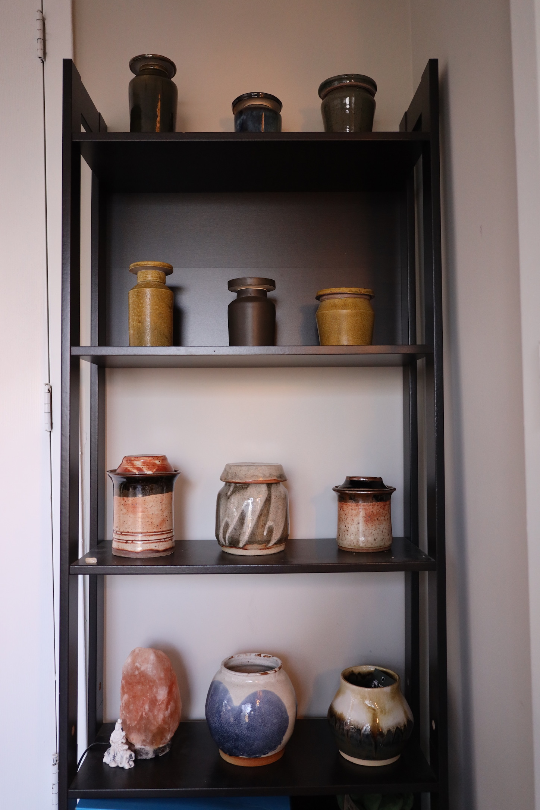

Brooklyn · 2024–2025

I make ceramics in Brooklyn — previously working in Atlanta, working to create pots with dynamic forms and practical function.
I strive to create pieces that are timeless, functional, and memorable. Each piece of pottery is made slowly and deliberately, and practically.
The ceramics I make are meant to be used and lived with. I'm interested in how handmade objects can become part of daily life - even if just on a shelf.
I work with several different clay bodies depending on the piece: brown stoneware, white stoneware, Lizella clay from Georgia, and occasionally porcelain. Each clay behaves differently on the wheel and responds to glazes in its own way. The brown stoneware shows iron spotting through certain glazes. White stoneware keeps colors clean and true. Lizella is a local Georgia clay with its own character. Porcelain is finicky but worth it for certain forms.
Each piece begins on the pottery wheel. I try to do as much shaping as possible during the initial throwing—I don't really like trimming. It's finicky work, and with enough foresight into what the final shape should be, most of it can be done on the wheel itself. The throwing stage is where the form gets decided, not in cleanup later.
For lidded jars, the throwing stage is especially important. They're great practice for learning to plan and stick to it. You generally need to know what lid and body form you want before you start in order to get them to match properly. No fixing it later if the proportions are off.
This is where Atlanta weather becomes an equation I haven't fully solved. The changing weather makes drying times hard to predict—humid one week, dry the next. Combined with a lack of patience for the inherently slow ceramic process, drying becomes a painstaking waiting game. You can't rush it without risking cracks, but waiting is its own challenge.
The first firing transforms raw clay into ceramic. Bisque firing typically reaches Cone 04 (around 1940°F), making the pottery hard enough to handle while remaining porous enough to accept glaze. This is the point of no return—once bisque fired, the clay won't revert back.
Glaze selection happens early in the process, not at the glazing stage. I need to decide beforehand so I can predict the final shape—cone 10 glazes shrink more than cone 6, which affects dimensions and fit, especially for lidded pieces. Planning the glaze during throwing means accounting for that final shrinkage.
I work with glazes like shino, floating blue, and Alberta slip. Each responds differently to firing conditions. Glazing techniques vary—dipping, pouring, brushing—depending on what the form needs. Results are never perfectly predictable, which is part of the ceramic process.
The final firing at Callanwolde in Atlanta brings everything together. Pieces are fired to Cone 6 or Cone 10 (2232°F to 2381°F) depending on the clay body and glaze choice. The cone 10 firings create fully vitrified stoneware—durable, functional pottery with developed surfaces.
Kiln atmosphere, heating rate, and cooling cycle all affect the final appearance. Each firing is controlled transformation—clay and glaze fusing into finished work.
This process is slow, sometimes frustratingly so. Each stage requires planning, patience, and accepting that not everything can be controlled. The result is pottery meant to be used—functional ceramics that become part of daily life.